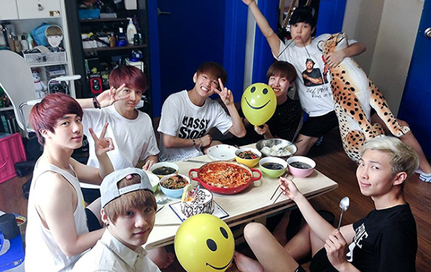

Budgetless But Bulletproof
BTS [방탄소년단], pronounced Bangtan Sonyeondan in Korean, was formed in 2010 by Big Hit’s CEO Bang Si-Hyuk. Initially, he wanted BTS to be a mature hip hop group, but later decided they could be a voice for youth and it’d be easier to connect with that audience if they were more like a traditional Korean idol group. Idol groups are known to have high visual standards, flashy fashion and elaborate dances. They’re also known for undergoing rigorous training to become polished stars and vessels for music rather than makers of music. Even though they were an idol group, RM, Suga and J-Hope were especially involved in the music making process with the other members joining in where they could. Because Big Hit was still a small company, their budget only allowed for a compact dorm for the seven of them to share. Each day they hung out, bickered, ate and trained together working towards the same dream. It’d be five years before they reached mainstream success.

BTS enjoying a meal in their first dorm together
BTS’ debut album, 2 Cool 4 Skool released in June of 2013. This would be the first of their “school trilogy” focusing on the struggles and concerns of youth. The accompanying single, “No More Dream” peaked at 124 in Korea, but quickly disappeared from the charts. With the album only selling 24,000 copies, it wasn’t a hit and their next single “We are Bulletproof Pt 2.” failed to even chart. The chances of success were slim since they were competing against artists from JYP, SM and YG (nicknamed the “Big Three” back then for dominating the SK music market). What they lacked in budget and industry connections they hoped they could make up for with striking performances and determination.
In September of 2013, BTS released their second album, O!RUL8,2? and single “N.O.” which expanded on the themes of dreams and happiness and also criticized the harsh South Korean education system. These were unusual topics to write about for an idol group, but they’d continue making socially conscious music throughout their careers. Regular fans of idol groups didn’t like them because they were “too ugly to be idols” and their tacky outfits born of budget constraints were not helping. Even though their music was Hip hop and R&B, independent artists from these communities belittled them for replacing the heart of hip hop with idol group glamour. They also didn’t consider it real hip hop because they assumed BTS weren’t involved in the music making process at all. Despite not really fitting in anywhere, BTS managed to win some awards that year.